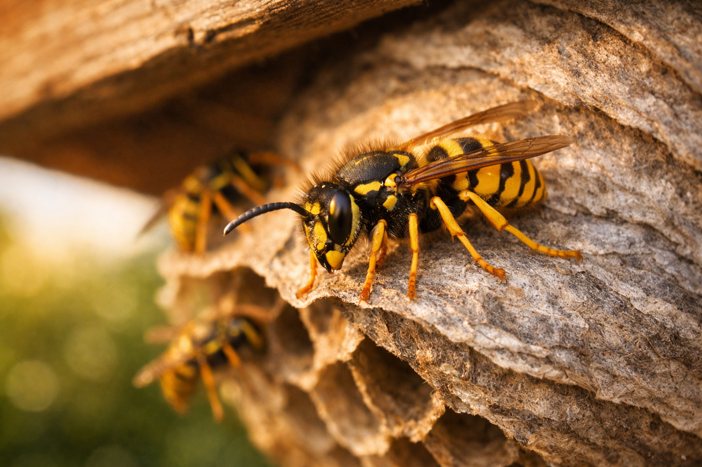

Wasp Season: When Are Wasps Most Active?
Every summer, wasps become one of the most common pest complaints across Long Island. Understanding their life cycle — and knowing when they’re at their most aggressive — can help you stay safe and act quickly if you find a nest.
the Barron team
NYSDEC Reg #17056 • 4 min read

Introduction
If you’ve ever had a Long Island backyard BBQ ruined by yellow jackets buzzing around your food and drinks, you’re not alone. Wasps are a fact of life on Long Island from spring through fall, but there’s a specific window — typically August and September — when they become noticeably more aggressive and problematic.
For homeowners across Suffolk County, Nassau County, The Hamptons and the rest of Long Island, knowing when wasps are most active can help you prepare, take precautions and recognize when it’s time to call in a professional.
The Wasp Life Cycle
To understand when wasps are most dangerous, it helps to know how their colonies develop throughout the year.
Spring (April–May): The Queen Emerges
A fertilized queen wasp emerges from hibernation as Long Island temperatures warm up in April. She begins building a small nest — roughly the size of a golf ball — and lays her first batch of eggs. At this stage, the queen does everything herself: building, foraging and caring for the developing larvae.
Early Summer (June–July): Workers Take Over
Once the first generation of worker wasps hatches, they take over nest-building and foraging duties. The queen stays inside and focuses solely on laying eggs. The colony grows rapidly through June and July, with the nest expanding week by week.
Late Summer (August–September): Peak Activity
By August, a healthy wasp colony can contain anywhere from 3,000 to 10,000 workers. The nest may have grown from golf-ball size to the size of a basketball — or even larger. This is when wasp activity peaks across Long Island and when most people notice problems.
Fall (October–November): The Colony Dies Off
As Long Island temperatures drop in October, the queen produces males and new queens, which leave the nest to mate. The old queen, the workers and the males all die off when the first hard frosts arrive. Only the newly fertilized queens survive, finding sheltered spots to overwinter. The old nest is never reused.
When Are Wasps Most Dangerous?
The short answer: late summer, particularly August and September.
Here’s why. During the earlier months, worker wasps are kept busy feeding protein-rich food (insects) to the developing larvae in the nest. The larvae, in return, produce a sugary secretion that the workers feed on. It’s a balanced system that keeps the workers focused and purposeful.
By late summer, the queen stops laying and the last generation of larvae pupates. Suddenly, the workers have no larvae to feed — and no sugary reward to sustain them. They leave the nest in search of alternative sugar sources: your soda, ice cream, ripe fruit, backyard cookouts and trash cans.
This is exactly when wasps become a real nuisance. They’re hungrier, more erratic and more likely to sting if they feel threatened. Labor Day cookouts, outdoor dining, school playgrounds, beach picnics and curbside trash cans all become Long Island hotspots for wasp activity during this period.
Common Wasp Nest Locations
Wasps are resourceful nest-builders and will use a wide range of locations. Knowing where to look can help you spot a nest before the colony reaches peak size. Common locations include:
- Attics — one of the most common locations we treat across Suffolk and Nassau Counties.
- Under eaves and soffits — look for wasps repeatedly flying to the same spot on the roofline.
- Sheds and garages — especially in corners and along roof joists.
- Underground — yellow jackets often take over abandoned chipmunk or rodent burrows and holes in lawns and flowerbeds.
- Wall voids — wasps can enter through vents, gaps around pipework, siding or cracks in mortar.
- Bird boxes — an easy ready-made cavity that queens are quick to exploit in spring.
Nest size can range from a golf ball in spring to larger than a basketball by late summer. If you notice a steady stream of wasps entering and leaving the same spot, there’s almost certainly a nest nearby.
Should You Remove a Wasp Nest Yourself?
No. Attempting to remove or treat a wasp nest yourself is genuinely dangerous. A disturbed colony will defend the nest aggressively, and multiple stings can cause serious allergic reactions — even in people who have never reacted to a sting before.
Over-the-counter wasp killer sprays and foams are unreliable. They may kill a few wasps on the surface but rarely penetrate deep enough to destroy the colony. Worse, they can agitate the remaining wasps and make the situation more dangerous.
Nests in attics and wall voids pose additional risks — climbing ladders while wasps are swarming, working in confined spaces and handling chemicals without proper training are all recipes for injury.
A professional treatment is quick, effective and safe. A NYSDEC-licensed pest controller will apply professional-grade product directly into the nest entrance. The treatment itself typically takes just 10–15 minutes, and the nest usually dies off completely within 24 hours.
What to Do If You Find a Wasp Nest
If you’ve spotted a wasp nest — or suspect there’s one nearby — follow these steps:
- Don’t disturb it. Avoid prodding, poking or spraying the nest. Even vibrations from a lawnmower or heavy footsteps near an underground nest can trigger an attack.
- Keep children and pets away. Make sure everyone in the household knows where the nest is and stays clear of the area.
- Don’t block the entrance. Sealing the nest entrance will trap wasps inside, but they’ll quickly find — or chew — an alternative exit, potentially into your living space.
- Call a professional. A NYSDEC-licensed pest controller can treat the nest safely and effectively, usually on the same day you call.
How Barron Pest Control Can Help
We treat wasp, yellow jacket and hornet nests throughout the summer and fall across Suffolk County, Nassau County, The Hamptons, the North Shore, the South Shore and all of Long Island. Here’s what you can expect when you contact us:
- Same-day service — we understand that a wasp nest is urgent, so we aim to attend on the same day you call.
- Safe, professional treatment — we use IPM-based, professional-grade treatments applied directly to the nest. Fast-acting, highly effective and safe around family and pets.
- One visit is usually all it takes — the nest typically dies off within 24 hours of treatment. In most cases, no follow-up visit is needed.
- Transparent pricing — we’ll give you a clear, fixed price before we start. No hidden extras.
The Barron team is NYSDEC licensed (Reg #17056), QualityPro certified and fully insured — with 35+ years of Long Island experience. Whether the nest is in your attic, under your eaves, in a shed or underground in your yard, we’ve handled it before and can take care of it quickly and safely.
Found a Wasp Nest?
Don’t risk treating it yourself. Get in touch for fast, professional wasp, yellow jacket and hornet nest treatment 24/7 across all of Long Island.